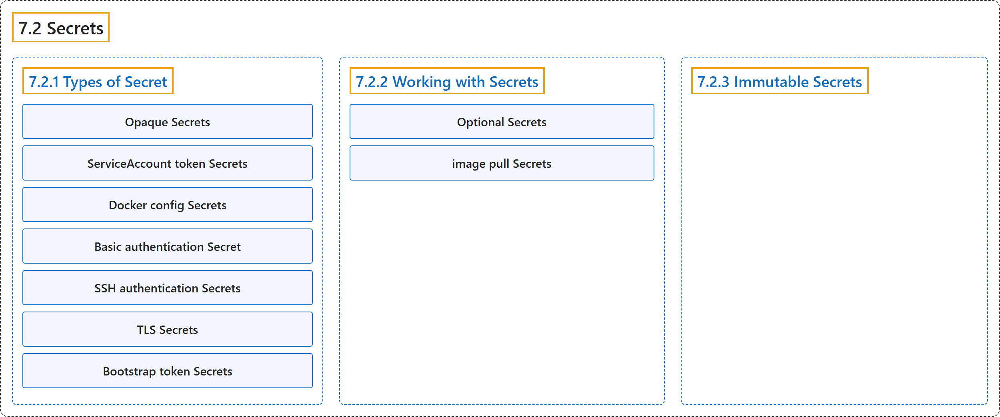

7.2 Secrets
Classification

Glossary
| Term | Definition | 中文翻译 | Source |
|---|---|---|---|
| 7.2 Secrets Secret |
"A Secret is an object that contains a small amount of sensitive data such as a password, a token, or a key." | Secret 是一个对象，包含少量敏感数据，例如密码、令牌或密钥。 | The Kubernetes Authors, n.d., "Secrets", para. 1 |
| 7.2.1 Types of Secret Secret 的类型 |
(No definition) | （无定义） | The Kubernetes Authors, n.d., "Types of Secret" |
| Opaque Secrets Opaque Secret |
"Opaque is the default Secret type if you don't explicitly specify a type in a Secret manifest." |
Opaque 是默认的 Secret 类型，用于你未显式指定类型的 Secret 清单。 |
The Kubernetes Authors, n.d., "Opaque Secrets", para. 1 |
| ServiceAccount token Secrets ServiceAccount 令牌 Secret |
"A kubernetes.io/service-account-token type of Secret is used to store a token credential that identifies a ServiceAccount." |
kubernetes.io/service-account-token 类型的 Secret 用于存储令牌凭据，它标识某个 ServiceAccount。 |
The Kubernetes Authors, n.d., "ServiceAccount token Secrets", para. 1 |
| Docker config Secrets Docker 配置 Secret |
(context) "If you are creating a Secret to store credentials for accessing a container image registry, you must use one of the following type values for that Secret:" |
（语境）如果你创建 Secret 来存储访问容器镜像仓库的凭据，必须为该 Secret 使用以下 type 值之一： |
The Kubernetes Authors, n.d., "Docker config Secrets", para. 1 |
| Basic authentication Secret 基本认证 Secret |
"The kubernetes.io/basic-auth type is provided for storing credentials needed for basic authentication." |
kubernetes.io/basic-auth 类型用于存储凭据，供基本认证所需。 |
The Kubernetes Authors, n.d., "Basic authentication Secret", para. 1 |
| SSH authentication Secrets SSH 认证 Secret |
"The builtin type kubernetes.io/ssh-auth is provided for storing data used in SSH authentication." |
内置类型 kubernetes.io/ssh-auth 用于存储数据，供 SSH 认证使用。 |
The Kubernetes Authors, n.d., "SSH authentication Secrets", para. 1 |
| TLS Secrets TLS Secret |
"The kubernetes.io/tls Secret type is for storing a certificate and its associated key that are typically used for TLS." |
kubernetes.io/tls Secret 类型用于存储证书及其关联的密钥，它们通常用于 TLS。 |
The Kubernetes Authors, n.d., "TLS Secrets", para. 1 |
| Bootstrap token Secrets 启动引导令牌 Secret |
"The bootstrap.kubernetes.io/token Secret type is for tokens used during the node bootstrap process." |
bootstrap.kubernetes.io/token Secret 类型用于令牌，这些令牌用于节点启动引导过程。 |
The Kubernetes Authors, n.d., "Bootstrap token Secrets", para. 1 |
| 7.2.2 Working with Secrets 使用 Secret |
(No definition) | （无定义） | The Kubernetes Authors, n.d., "Working with Secrets" |
| Optional Secrets 可选 Secret |
"When you reference a Secret in a Pod, you can mark the Secret as optional, such as in the following example." | 在 Pod 中引用 Secret 时，你可以把它标记为可选，如下例所示。 | The Kubernetes Authors, n.d., "Optional Secrets", para. 1 |
| image pull Secrets 镜像拉取 Secret |
(context) "You can configure image pull Secrets to make this possible." | （语境）你可以配置镜像拉取 Secret 来实现这一点。 | The Kubernetes Authors, n.d., "Container image pull Secrets", para. 1 |
| 7.2.3 Immutable Secrets 不可变 Secret |
"Kubernetes lets you mark specific Secrets (and ConfigMaps) as immutable." | Kubernetes 允许你把特定的 Secret（和 ConfigMap） 标记为不可变。 | The Kubernetes Authors, n.d., "Immutable Secrets", para. 1 |
References
The Kubernetes Authors. (n.d.). Secrets. Kubernetes Documentation. Retrieved October 31, 2026, from https://kubernetes.io/docs/concepts/configuration/secret/